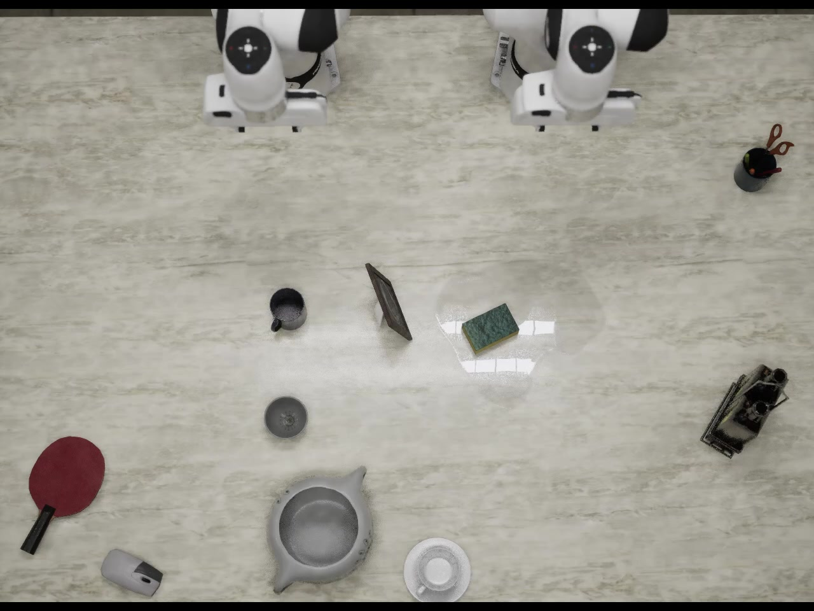
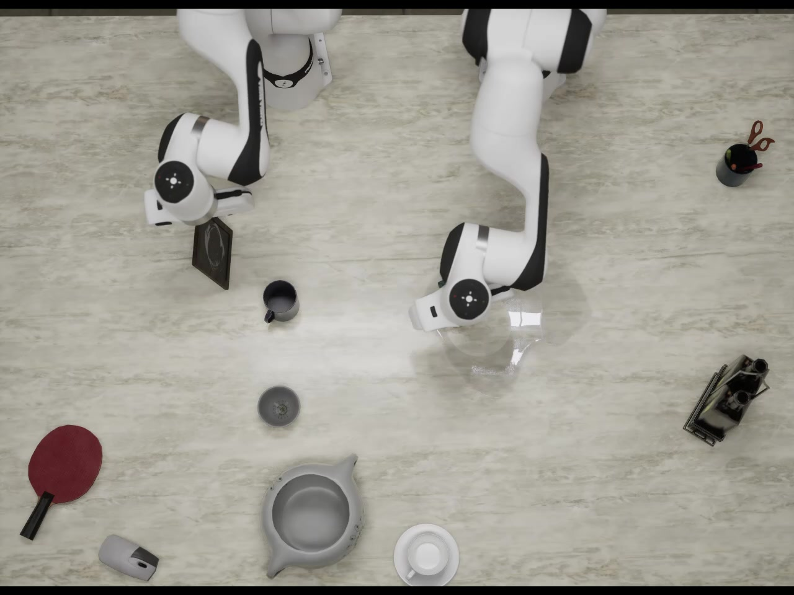
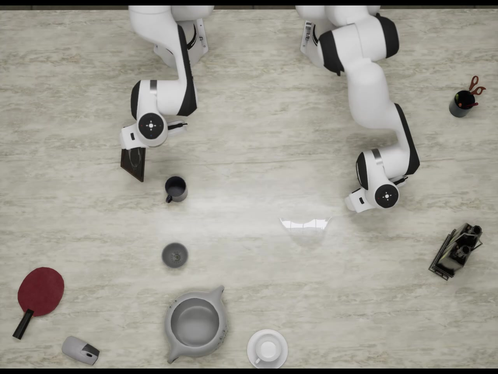
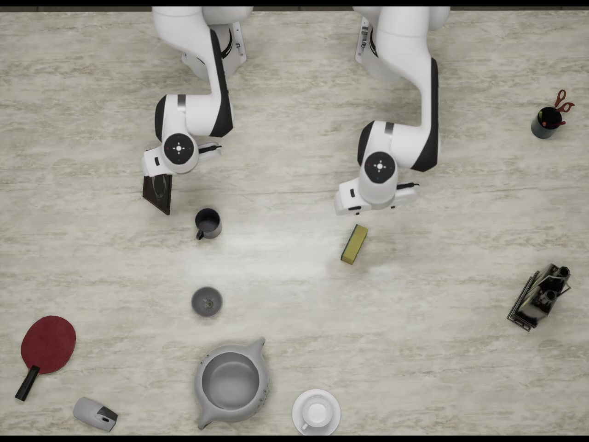
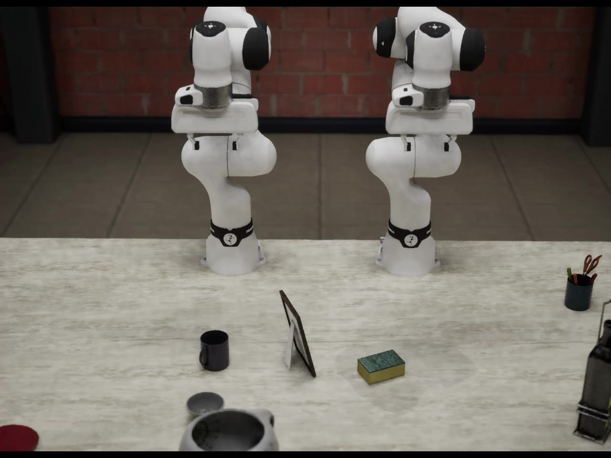
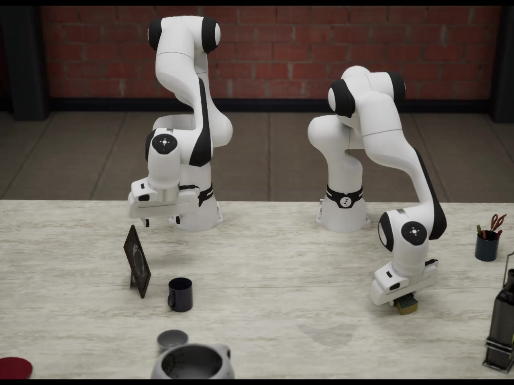
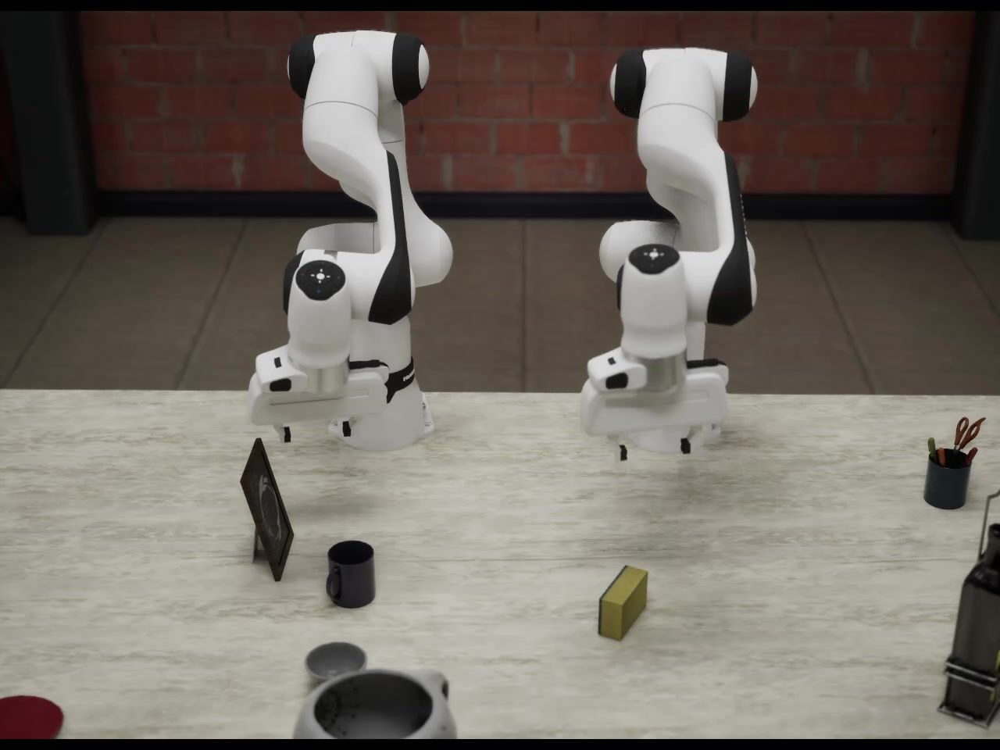
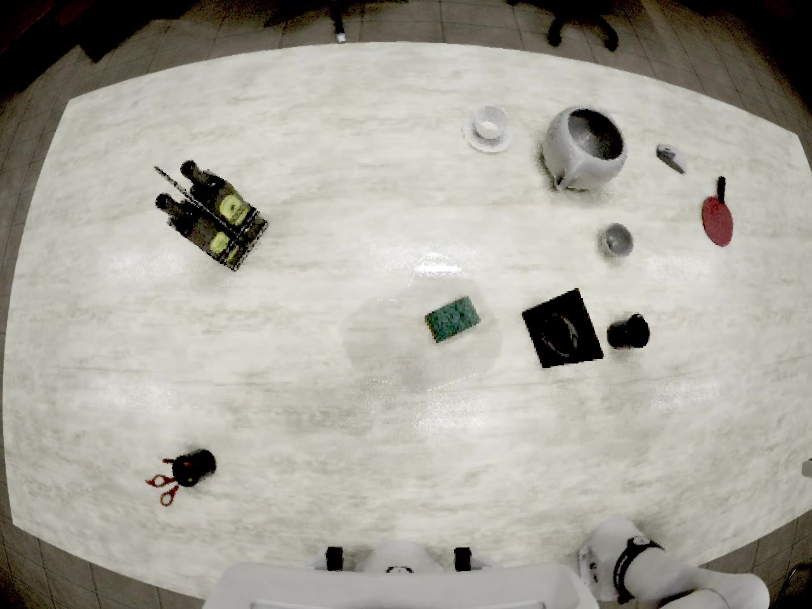
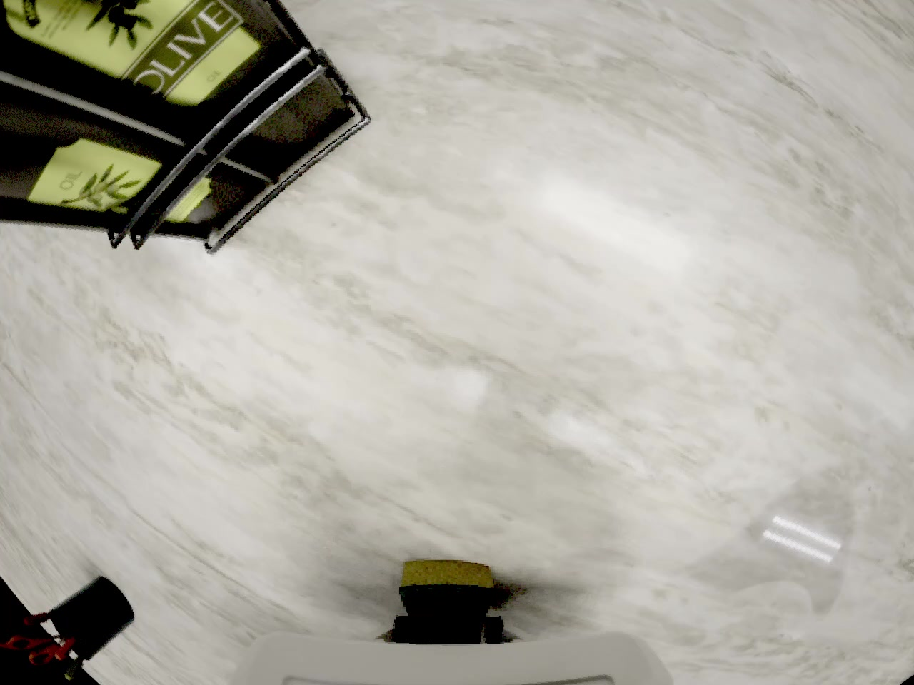
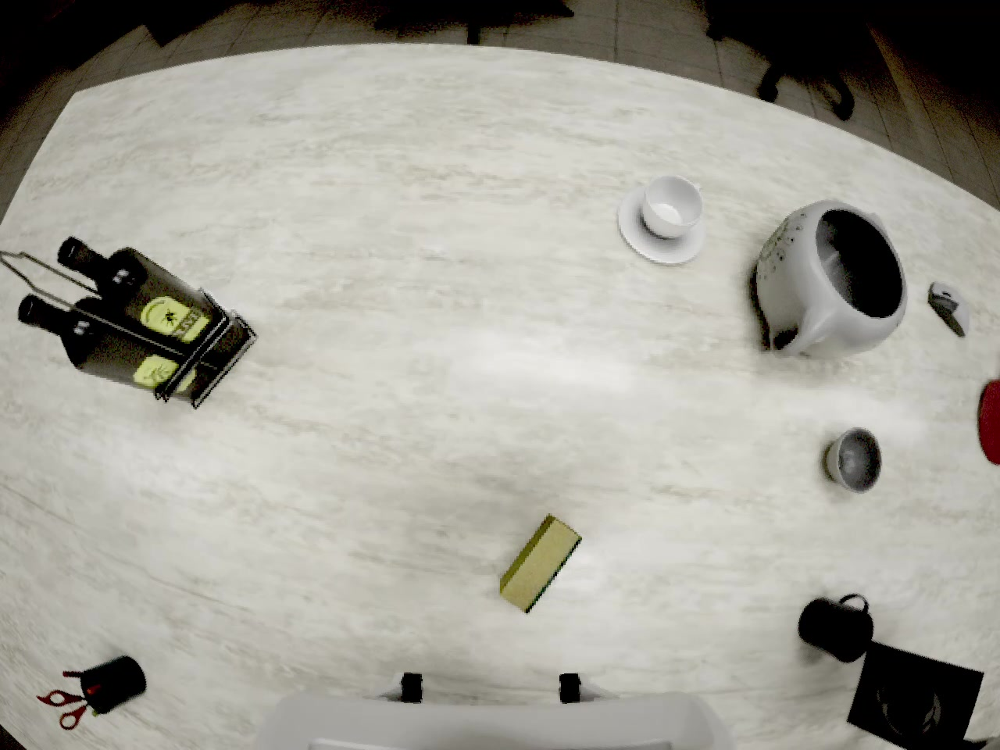

Exylos 双臂台面溢洒清理
数据集专项调研
VR 示范驱动 · 仿真清洁指标 · LeRobot 数据格式
1. 基本事实卡
任务定义
机器人需要先移开桌面上的遮挡物或干扰物，再用海绵把液体溢洒擦干净。
清洁是否达标
本条示范是否记为成功
规模与本体
| 项目 | 说明 |
|---|---|
| 机器人 | 双臂 Franka Emika Panda，每只手臂 7 个关节 + 平行夹爪 |
| 数据格式 | LeRobot 兼容：Parquet（轨迹与标注）+ MP4（视频）+ PNG（分割图） |
观测与动作接口
| 数据类型 | 说明 |
|---|---|
| RGB 视频 | 7 路固定/腕部相机（front、left、left_45、right、top、wrist_l、wrist_r），分辨率 1280×960，30 FPS，H.264 编码 |
| 深度图 | 无 |
| 实例分割 | 4 路 PNG 掩码；标签 0–6，其中 4 代表液体污渍（liquid_spill） |
| 机器人状态 / 动作 | 各 18 维：左右臂各 7 个关节 + 2 个夹爪指关节 |
| 力 / 力矩 | 无 |
| 物体状态 | 每帧记录海绵（sponge）、杯子（cup）、液体污渍（liquid_spill）；污渍带 dirty_fraction 字段 |
场景变体预览
同一条 VR 种子示范经仿真扩展后，会生成物体布局、干扰物与光照各不相同的变体。以下三路均为 top_cam 俯视，来自不同 Episode。
Episode 0
成功Episode 1
成功Episode 6
失败2. 数据从哪来（采集链路）
这条数据既不是真机实拍，也不是完全靠程序随机生成的轨迹。 做法是：让人在 VR 里先示范一遍怎么擦，再由仿真系统把示范转成机器人数据，并批量生成不同场景变体。
| 步骤 | 具体过程 | 执行方 |
|---|---|---|
| ① VR 示范采集 | 操作者在 VR 中完成「移障碍物 + 擦液体」，采集任务意图、操作节奏与双臂配合。 | 人 |
| ② 动作映射到机器人 | 手部动作 retarget 到 Franka Panda，输出 18 维 state/action，不保留原始骨骼数据。 | 系统 |
| ③ 仿真扩展与随机化 | 以审核通过的示范为种子，随机化物体布局、光照、视角等，批量生成物理一致的变体。 | 仿真系统 |
| ④ 导出为标准数据包 | 按 LeRobot 格式打包导出。 | 系统 |
人负责什么
仿真负责什么
样本演示 · Episode 0
以下三路视频来自本地已下载的 Episode 0 样本（~49s，成功示范）。 点击缩略图可跳转到对应时刻。
俯视 · top_cam
全局布局



正面 · front_cam
操作视角


左腕 · wrist_cam_l
近景接触


3. 标注与指标
任务阶段（含义与顺序）
每条示范被切成多个阶段，记录机器人在做什么。典型成功示范的主流程如下（左右臂可能同时进行）。
其中 clean_swipe_pass 表示一次擦拭划过，会重复出现多次，并包含在 clean_surface 这个更大的擦拭时段里。
| 顺序 | 阶段名 | 含义 |
|---|---|---|
| 1 | approach | 手臂移向目标物体 |
| 2 | grasp | 抓取物体（标注中可写明抓的是哪个物体） |
| 3 | transport | 搬运或移动物体 |
| 4 | place | 放下物体并松开夹爪 |
| 5 | retract | 手臂收回 |
| 6 | clean_surface | 擦拭台面的总时段 |
| 7 | clean_swipe_pass | 其中的一次擦拭划过（可重复多次） |
清洁度指标 dirty_fraction
用来干什么：判断这条示范擦干净了没有、筛成功/失败样本、在仿真里做离线评估。
真机上能不能用：不能。真机没有仿真这种「直接读剩余污渍面积」的能力，部署时不能靠它判断何时停手或是否成功。
Episode 0 · dirty_fraction 随时间变化 · 绿虚线为成功阈值 0.01 · 终端值 0.0003
起始 · dirty_fraction ≈ 1.0
完成 · dirty_fraction ≈ 0.0003
数据里还有 D1–D7 等动作质量评分，但官方未公开计算公式，且与 dirty_fraction 不是同一类指标。
4. 对我们有什么用
以下判断基于：仿真/真机方案尚未确定，感知以 RGB 相机为主，关注自建数据采集与评测方法。
| 使用方式 | 评价 | 原因 |
|---|---|---|
| 直接拿来当真机预训练数据 | 不太合适 | 场景和机器人都来自仿真，与真实 G1、xArm 等在形态和外观上差距较大 |
| 参考数据格式和标注设计 | 很有价值 | LeRobot 结构完整，含视频、mask、位姿、阶段标注，适合作为自建数据的格式模板 |
| 参考「怎么判断擦干净了」 | 很有价值 | 可借鉴「剩余污渍比例 + 失败原因分类 + 阶段标注」的思路；但真机上需另建可观测的替代指标 |
5. 官方公开了什么、没公开什么
已公开，可按文档使用
- 数据目录结构与 Parquet 字段说明
- 相机列表、分割标签、关节顺序
- dirty_fraction 的含义与 0.01 达标门槛
- 任务阶段名称与数据加载示例
- 采集链路的整体描述
未公开，无法复现
- 污渍面积的具体计算方法
- VR 动作到 Panda 的重定向算法
- 场景随机化的参数设置
- 阶段边界的自动切分方法
- D1–D7 评分的计算公式与全量数据规模
6. 和其他擦拭数据集对比
可横向滚动查看完整表格。Exylos 的优势在于仿真里提供了可直接读取的清洁度指标和较完整的阶段标注；若需要真机数据或力觉信息，应优先考虑其他数据集。
| 维度 | Exylos 主集 | Unitree G1 | ForceFlow | DROID wipe | ALOHA wipe | RoboCOIN* |
|---|---|---|---|---|---|---|
| 数据条数 | 50 | 200 | 擦拭相关 150 条 | 20 | 50 | 约 1176 条* |
| 真机 / 仿真 | 仿真 + VR 示范 | 真机 | 真机 | 真机 | 真机 | 真机（多平台） |
| 采集方式 | VR 示范 → 映射到机器人 → 仿真扩展 | AVP 遥操作 | SpaceMouse 遥操作 | DROID 体系 | Mobile ALOHA | 多平台遥操作 |
| 机器人 | 双臂 Panda | Unitree G1 | xArm6 | Franka | ALOHA 移动双臂 | 多种型号 |
| 力 / 力矩 | 无 | 文档未说明 | 有 | 非核心字段 | 文档未说明 | 视平台而定 |
| 清洁指标 | dirty_fraction ≤ 0.01 | 未给出面积公式 | 以力跟踪为主 | 无同类指标 | 无同类指标 | 任务/动作级标注 |
| 主要价值 | 仿真清洁指标、阶段标注、失败分类 | 真机人形擦桌子 | 力控擦拭研究 | 真机小样本 | 移动双臂擦拭 | 大规模真机子集 |
* RoboCOIN 条数来自本仓库既有调研；完整数据需 HuggingFace 授权下载。
需要清洁度指标和阶段标注
需要力控擦拭数据
需要真机真实分布
7. 使用时的注意点
仿真到真机的差距
真机上难以观测污渍
清洁指标不能用于真机部署
公开包规模有限
没有力觉信息
机器人本体不同
参考来源
- Hugging Face：ExylosAi/table_spill_cleanup_bimanual 数据集说明
- 本地元数据：datasets/exylos_table_spill_50ep_meta/
- 对比数据集：Unitree G1、ForceFlow、DROID wipe、ALOHA mobile wipe 的公开说明
网页版 · Markdown 原文 · 返回总调研